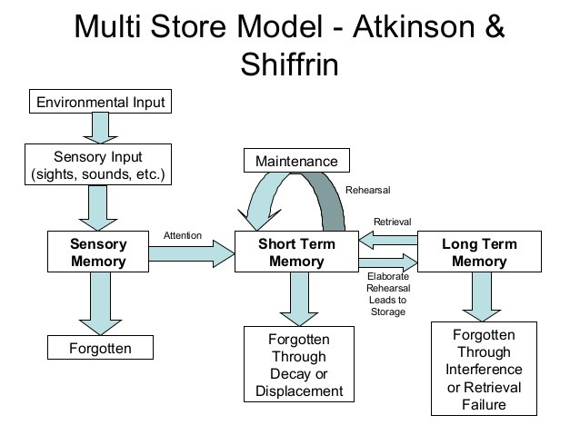

The Big Picture: More Than Just a Video Camera
We often think of human memory like a video camera recording perfect footage of our lives that we can just rewind and watch later. But memory doesn't work like that at all. It is highly selective, constantly changing, and constructed in three primary stages: getting the information in (encoding), holding onto it over time (storage), and getting it back out when you need it (retrieval). This three-stage framework, often compared to how a computer handles data, is known as the Information Processing Model. Let's dive into how information travels from the outside world into the permanent archives of your brain.
1.The Multi-Store Model: The Journey of a Memory
According to this classic model, for a memory to become permanent, it must successfully pass through three distinct systems:
- Sensory Memory
- The incredibly brief initial recording of sensory information. It acts as a holding pen. Visual information is held as an iconic memory for just a fraction of a second, while auditory information is held as an echoic memory for a few seconds. (This is why when you aren't paying attention and someone asks, "Are you listening to me?" you can usually repeat their last few words perfectly before they fade!)
- Short-Term Memory
- If you pay attention to sensory information, it moves here. Short-term memory has a very limited capacity (classically thought to be about 7 items) and holds information for only a short time before it is either processed further or lost forever.
- Long-Term Memory
- Through rehearsal and encoding, information is eventually moved to this permanent, limitless storehouse.

2.The Active Workspace: The Working Memory Model
Modern psychologists realized that "short-term memory" wasn't just a passive waiting room. It's actually a highly active, scratchpad-like system where your brain constantly juggles new information with old memories to solve problems. We now call this Working Memory.
Your working memory is managed by a "boss" called the Central Executive, which directs your attention and manages cognitive tasks. To help it process information, the central executive uses sub-systems like the visuospatial sketchpad (which temporarily stores and manipulates visual maps and shapes in your mind's eye) and the phonological loop (which handles auditory rehearsal, like repeating a phone number to yourself).
3.How We Encode: Levels of Processing
How hard you think about something determines how well you remember it. Some information, like what you ate for lunch or the route you took to school, skips the line and goes straight into memory without you even trying. This is automatic processing. But studying for your AP Psychology exam requires effortful processing: deliberate attention and conscious work.
The Levels of Processing Model suggests that memory depends on the depth of your encoding:
- Shallow Encoding
- Engaging with information on a very superficial level. For example, structural encoding focuses purely on what a word looks like (e.g., Is it in all capital letters?). Phonemic encoding focuses on how a word sounds (e.g., Does it rhyme with 'cat'?). These shallow methods result in weak, easily forgotten memories.
- Deep Encoding
- Engaging with information meaningfully. Semantic encoding requires you to think about what the word actually means and how it connects to your own life. This creates the strongest, most durable memories. (This is why connecting vocab words to personal stories is the best way to study!)
4.The Library of the Brain: Types of Long-Term Memory
Once a memory makes it into long-term storage, it is sorted into different categories based on how it is retrieved:
- Explicit MemoryDeclarative
- These are memories you can consciously recall and easily describe to others.
- Episodic Memory
- The storybook of your life. These are memories of personal experiences and specific events (e.g., your 10th birthday party or what happened on your first day of high school).
- Semantic Memory
- The encyclopedia of your brain. These are general facts, knowledge, and definitions (e.g., knowing that the capital of France is Paris).
- Implicit MemoryNon-Declarative
- These are memories that operate unconsciously and are very hard to explain in words. A major type is Procedural Memory, which is the memory of how to perform physical tasks and skills (like riding a bike or tying your shoes). Your body just "knows" how to do it.
Finally, we have Prospective Memory, which isn't about remembering the past at all! It's the memory of remembering to do something in the future (e.g., remembering to take your vitamins before you go to bed tonight).
5.The Biology of Memory: Strengthening the Connections
Memories are not stored in a single "memory box" in your brain; they are stored in the complex webs of neurons communicating with each other. When you learn something new and practice it repeatedly, the synaptic connections between those specific neurons become stronger and more efficient at firing. This biological process is called Long-Term Potentiation (LTP). As neuroscientists like to say: "Neurons that fire together, wire together."
6.Don't Trip Up! (Common Misconceptions)
⚠️ Short-Term vs. Working Memory: While often used interchangeably, remember the distinction! Short-term memory simply refers to the brief storage capacity. Working memory refers to the active manipulation of that information to solve a problem.
⚠️ Episodic vs. Semantic Memory: An easy way to remember the difference: Episodic sounds like "Episode" (as in, an episode of a TV show starring YOU as the main character). Semantic means "meaning" (as in, the factual meaning of words and concepts).
7.Key Terms in This Topic
8.Practice This Topic
Test yourself on exactly what you just read. The numbers on each button show how much material is waiting for you.
The same self-check questions that close your guided notes. Find out whether the memory models stuck.
Start Quick Check →Flip through the key terms from this topic, including the working memory components and the types of long-term memory.
Open the deck →AP-style multiple choice on the memory models, encoding, and the types of long-term memory, with an explanation after every answer.
Take the quiz →